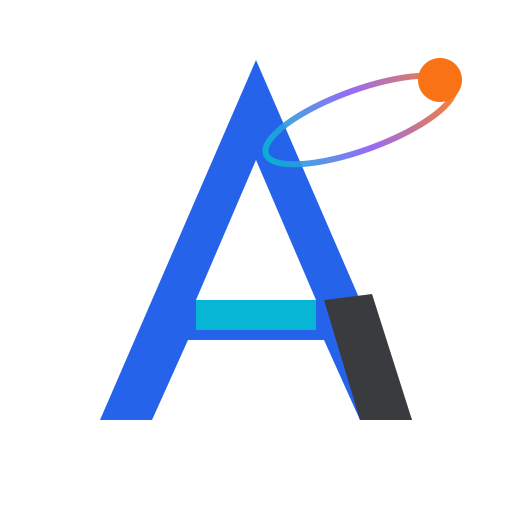

Acceso cerrado durante la implementación
Workspace será el espacio privado para capturar información, extraer texto y tablas, editar documentos, preparar datos, crear informes y automatizar tareas.
Captura y extracción
Documentos editables
Datos y Query
Informes y automatizaciones
Volver a Toolisto